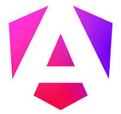
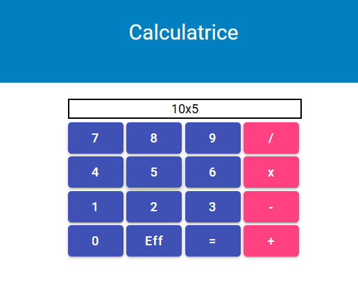
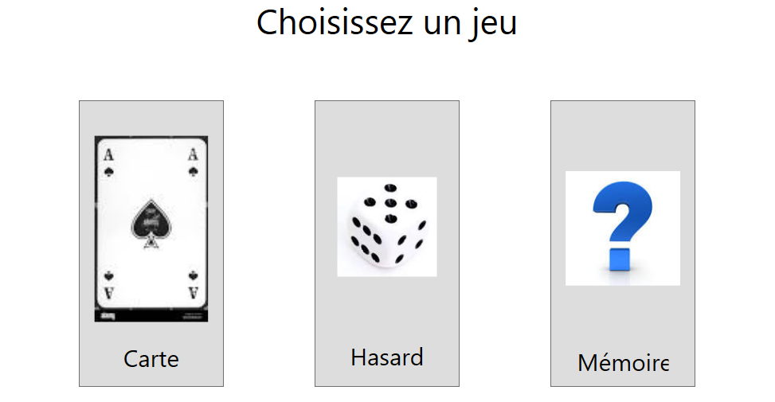
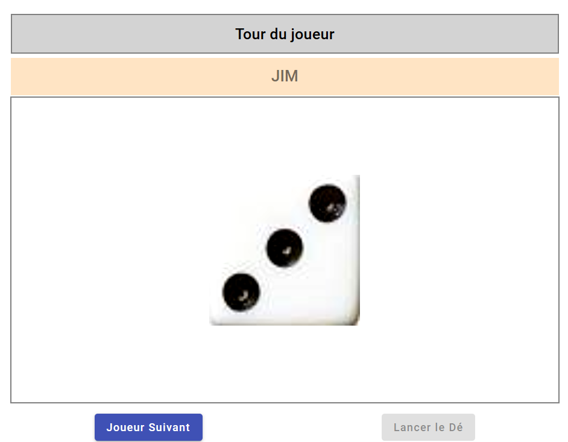
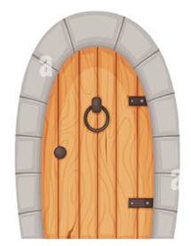

Mes Compétences
Java

Développeur informatique passionné, je me spécialise dans la conception et le développement d'applications web et de jeux vidéo. Grâce à une formation approfondie en programmation et à une forte capacité d'apprentissage, j'ai acquis des compétences solides dans des environnements techniques variés.


Contexte :
Ce projet a été réalisé dans le cadre de ma formation de développeur Java chez Aston IT. Il s'agit d'un projet d'apprentissage en groupe, autour de la conception d'une application web dédiée à la nutrition.
Objectif du projet :
Permettre aux utilisateurs de planifier leurs repas, de suivre leur apport nutritionnel, et de définir un objectif de poids. Le projet a été partiellement développé afin de mettre en pratique les technologies modernes utilisées en entreprise.
Ce que j'ai réalisé :
Technologies utilisées :
Java 17, Spring Boot 3 (JPA, MVC), Angular 16, MySQL, Docker, GitHub
Cliquez sur l'image

Description du projet
Ce projet a pour objectif de faciliter la gestion quotidienne d'un établissement scolaire. Il permet de gérer efficacement les informations liées aux élèves, enseignants, cours, et notes.
Fonctionnalités principales :
Technologies utilisées :
Java 21, Spring Boot 3 (JPA, MVC), Angular 19, Oracle Database

Ce projet est une application de calculatrice interactive développée en TypeScript. Elle offre une interface utilisateur simple pour effectuer des opérations mathématiques de base tout en gérant dynamiquement les entrées de l'utilisateur.

Jeux:
- de mémoire, dont le but est de trouver des pairs
- de hasard, dont le but est d'obtenir un score de 20 en lançant un dé
- de cartes, dont le but est d'avoir le plus grand chiffre
Réaliser en WPF

Jeux:
- de mémoire, dont le but est de trouver des pairs
- de hasard, dont le but est d'obtenir un score de 20 en lançant un dé
Réaliser en Angular
Un projet développé sous Unity et C#, simulant un jeu de hasard basé sur le lancer de dés. Ce projet met en avant des compétences en programmation orientée objet et en conception de gameplay interactif, avec une structure modulaire permettant des extensions ou personnalisations futures.

Un projet ludique réalisé avec Unity et C#, basé sur un concept de choix et de hasard. Les joueurs interagissent avec des portes pour découvrir des récompenses ou des surprises, illustrant des compétences en création de mécaniques de jeu et en gestion des événements aléatoires.